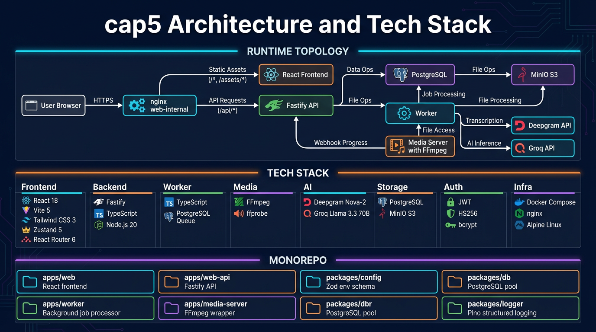

ADR-001: PostgreSQL is the queue — FOR UPDATE SKIP LOCKED plus leases, heartbeats, reclaim, and dead-lettering. No external broker needed.
ADR-002: Synchronous media orchestration — Worker calls media-server directly via POST /process. Simple pipeline, easy to reason about.
ADR-003: Shared HMAC shape — Inbound and outbound webhooks use the same timestamped HMAC format with delivery IDs.
ADR-004: Single-user JWT auth — Email/password with bcrypt, stateless HS256 JWT, httpOnly cookie transport. No multi-tenant overhead.
ADR-005: Runtime naming is cap5 — S3 bucket defaults to cap5, object routing uses /cap5/..., webhook media type uses application/cap5-webhook+json.

Infographic will appear here once generated